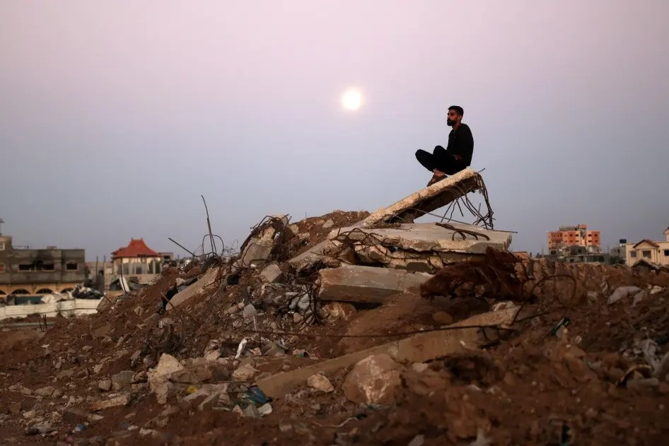
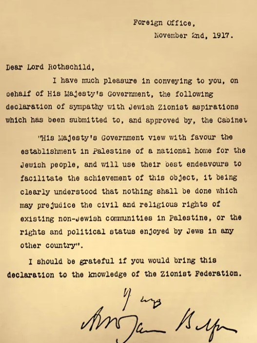

.png)
INTRODUCTION
The Israeli-Palestinian conflict has claimed tens of thousands of lives and displaced many millions of people and has its roots in a colonial act carried out more than a century ago.
IMPORTANCE OF THE CONFLICT
The region, often referred to as the "Holy Land," is sacred to Jews, Christians, and Muslims.
- For Jews, the region is considered the Land of Israel (Eretz Yisrael), the promised land given to them by God, and the site of their ancient kingdoms and the First and Second Temples in Jerusalem.
- For Christians, it is the place where Jesus Christ was born, lived, ministered, was crucified, and resurrected. Key sites like Bethlehem, Nazareth, and Jerusalem are central to Christian faith and pilgrimage.
- For Muslims, the region is holy as the site of the Dome of the Rock and the Al-Aqsa Mosque in Jerusalem, considered the third holiest site in Islam after Mecca and Medina. The Al-Aqsa compound is believed to be the spot from which the Prophet Muhammad ascended to heaven during his Night Journey.

THE BALFOUR DECLARATION
The Israeli-Palestinian issue goes back nearly a century when Britain, during World War I, pledged to establish a national home for the Jewish people in Palestine under the Balfour Declaration. British troops took control of the territory from the Ottoman Empire at the end of October 1917.
